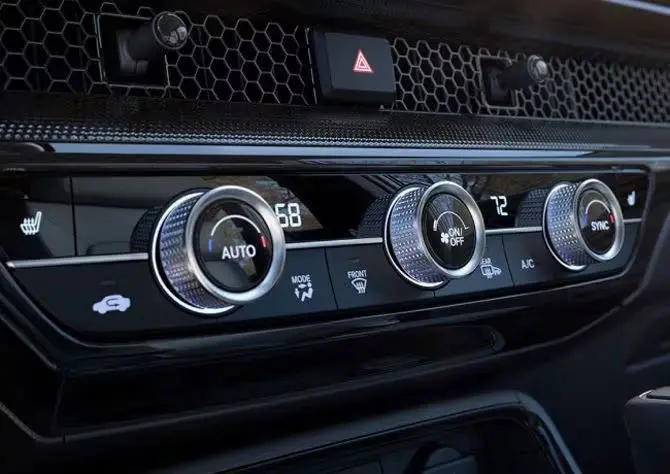
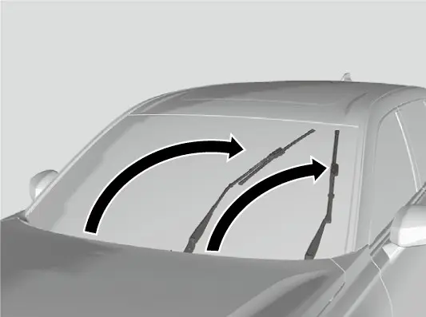
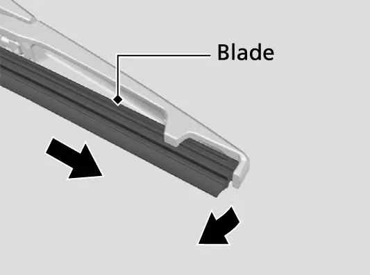

קאפיטל 11
ליכט און זעאונג
זייטן 185–197 אינעם PDF
הויפט-לייכטן און דער ליכט-שאלטער
דער ליכט-שאלטער איז אויפן לינקן הענטל ביים סטירינג, וואס קאפיטל 6 ווייזט וואו עס געפינט זיך. דער שאלטער האט א פאזיציע וואס שטייט אויף איר AUTO (אויטאמאטיש), און דארט דארפט איר אים לאזן. ווען דער שאלטער איז אויף AUTO און דער Power מאדָ איז אויף ON (אנגעצונדן), צינדן זיך די דרויסנדיגע לייכטן אן און לעשן זיך אויס אליין, לויט ווי ליכטיג עס איז דרויסן.
AUTO גיט אייך אויך א שיינע באגריסונג. ווען עס איז טונקל און איר עפנט א טיר, צינדן זיך אן די הויפט-לייכטן און די פארקינג לייכטן, און זיי לעשן זיך אויס ווען איר פארשליסט ווידער די טיר. ווען די דרויסנדיגע לייכטן זענען אן , לייכט דער lights on indicator (דאס לעמפל וואס ווייזט אז די לייכטן זענען אן) אויפן 7-אינטש מעטער דיספליי.

מאנועלע שאלטער פאזיציעס
דער שאלטער האט צוויי מאנועלע פאזיציעס, יעדע איינע מיט א סימבאל. די הויפט-ליכט פאזיציע צינדט אן סיי די הויפט-לייכטן און סיי די פארקינג לייכטן. די פארקינג-ליכט פאזיציע צינדט אן נאר די פארקינג לייכטן. ווען די פארקינג לייכטן זענען אן, זענען אויך אן די זייט-מארקער לייכטן, די הינטערשטע לייכטן און די לייכטן אויפן הינטערשטן לייסענס פלעיט.
פאזיציעס פונעם ליכט-שאלטער
| פאזיציע | וואס איז אן | ווען צו ניצן |
|---|---|---|
| AUTO | לייכטן גייען לויט דער ליכטיגקייט דרויסן | נארמאל דרייוון, שטענדיג |
| הויפט-ליכט סימבאל | הויפט-לייכטן און פארקינג לייכטן | ווען איר ווילט צווינגען די הויפט-לייכטן אן |
| פארקינג-ליכט סימבאל | פארקינג, זייט-מארקער, הינטערשטע און לייסענס פלעיט לייכטן | אויף א קורצע צייט צייכענען דעם געפארקטן קאר |
| OFF (דרייען און לאזן) | הויפט-לייכטן און פארקינג לייכטן אויס | נאר אין P אדער מיטן פארקינג ברעמז אנגעצויגן |
כדי אויסצולעשן די לייכטן, דרייט דעם שאלטער אויף OFF און לאזט אים לאז. דאס ארבעט נאר ווען די טראנסמיסיע איז אין P אדער דער פארקינג ברעמז איז אנגעצויגן. די לייכטן צינדן זיך צוריק אן אליין אויב איר דרייט נאכאמאל דעם שאלטער אויף OFF און לאזט אים, אדער אויב איר שיפט ארויס פון P און לאזט אפ דעם פארקינג ברעמז.
דער ליכט-סענסאר
AUTO הענגט אפ אין א light sensor (ליכט-סענסאר), און די בילד אינעם מאנואל ווייזט וואו ער געפינט זיך. דעקט אים נישט צו מיט גארנישט, ווי פאפירן אדער א פארקינג פערמיט, ווייל אנדערש קען די אויטאמאטישע באלייכטונג נישט ארבעטן ווי עס דארף צו זיין.
ביי אמעריקאנער מאדעלן קען מען איינשטעלן ווי שטארק סענסיטיוו די אויטאמאטישע לייכטן זענען. דער מאנואל ברענגט די איינשטעלונג אונטער Vehicle Settings (קאר איינשטעלונגען) פאר מאדעלן מיטן A-type meter, וואס דאס איז דער 7-אינטש דיספליי אין אייער EX. קאפיטל 7 דערקלערט ווי אזוי צו געפינען Vehicle Settings. אויב איר מיינט אז די הויפט-לייכטן זענען נישט ריכטיג געצילט, לאזט דעם קאר נאכקוקן ביים דילער.
הויפט-לייכטן צוזאמען מיט די ווייפערס
די הילף פאר רעגנדיגע טעג ארבעט נאר ווען דער שאלטער איז אויף AUTO און די הויפט-לייכטן זענען אויס. אויב איר ניצט די ווייפערס עטליכע מאל אין א געוויסע צאל אינטערוואלן, צינדן זיך די הויפט-לייכטן אן אויטאמאטיש. זיי לעשן זיך אויס א פאר מינוט נאכדעם וואס איר שטעלט אפ די ווייפערס. די ליכטיגקייט פונעם אינסטרומענט פאנעל טוישט זיך נישט דערביי. אויב עס איז טאקע טונקל דרויסן, צינדט די נארמאלע אויטאמאטישע באלייכטונג אן די הויפט-לייכטן, נישט קיין חילוק וויפיל מאל איר ווייפט. איר קענט די פונקציע אנצינדן אדער אויסלעשן אין Vehicle Settings. קאפיטל 10 רעדט וועגן דרייוון אין שטארקן רעגן.
אויטאמאטיש אויסלעשן די לייכטן
ווען איר פארקט, באזארגן זיך די לייכטן אליין. די הויפט-לייכטן, אלע אנדערע דרויסנדיגע לייכטן און די לייכטן פונעם אינסטרומענט פאנעל לעשן זיך אויס 15 סעקונדעס נאכדעם וואס אלע דריי זאכן זענען געשען: איר שטעלט דעם Power מאדָ אויף VEHICLE OFF (קאר אויסגעלאשן), איר נעמט מיט דעם קיילעס רימאוט, און איר מאכט צו די טיר פון דרייווער.
ווען די לייכטן לעשן זיך אויס אויטאמאטיש
| מצב | די לייכטן לעשן זיך אויס נאך |
|---|---|
| VEHICLE OFF, רימאוט מיטגענומען, טיר פון דרייווער צוגעמאכט | 15 סעקונדעס |
| VEHICLE OFF מיטן הויפט-ליכט שאלטער אן, טיר קיינמאל נישט געעפנט | 10 מינוט |
| דאס זעלבע, אבער שאלטער אויף AUTO | 3 מינוט |
| טיר אויפגעשלאסן אבער נישט געעפנט | 15 סעקונדעס |
ווען איר שליסט אויף אדער עפנט די טיר פון דרייווער, צינדן זיך די לייכטן צוריק אן. אויב איר עפנט די טיר פון דרייווער, וועט א רימיינדער קלינגען אז די לייכטן זענען אן. איר קענט טוישן דעם טיימער פאר'ן אויטאמאטיש אויסלעשן פון די הויפט-לייכטן אין Vehicle Settings.
טאג-לייכטן
לויט Honda'ס ספעציפיקאציעס זענען LED daytime running lights (DRL, טאג-לייכטן) סטאנדארט אויפן EX. די פארקינג/ טאג-לייכטן צינדן זיך אן ווען אלע די תנאים זענען דא:
- דער Power מאדָ איז אויף ON.
- דער ליכט-שאלטער איז אויף AUTO (דער מאנואל ברענגט דא אויך איינע פון די מאנועלע שאלטער פאזיציעס).
- דער פארקינג ברעמז איז אפגעלאזט.
דערנאך בלייבן די DRL אן אפילו אויב איר ציט אן דעם פארקינג ברעמז. ווען איר שטעלט דעם Power מאדָ אויף VEHICLE OFF, לעשן זיי זיך אויס. זיי לעשן זיך אויך אויס ווען איר צינדט אן די הויפט-לייכטן, אדער ווען דער שאלטער איז אויף AUTO און עס ווערט טונקל דרויסן.
Honda'ס ספעציפיקאציע ליסטע פאר'ן EX האט נישט קיין פאג לייכטן, און די לייכטן-אפטיילונג אינעם מאנואל באשרייבט נישט קיין פאג-ליכט שאלטער. איר דארפט נישט זוכן קיין פאג-ליכט קאנטראל אין אייער קאר.
הויכע לייכטן
ווען די הויפט-לייכטן זענען אן, שטופט דאס הענטל פאראויס, אוועק פון אייך, כדי אנצוצינדן די הויכע לייכטן. ציט עס צוריק כדי צוריקצוגיין צו נידעריגע לייכטן. כדי צו בלינקען מיט די הויכע לייכטן, ציט דאס הענטל צו זיך. די הויכע לייכטן בלייבן אן כל זמן איר האלט דאס הענטל, און ווען איר לאזט עס לאז קומען צוריק די נידעריגע לייכטן. אויף א טונקלן וועג אן קיינעם פאר אייך, לאזן אייך די הויכע לייכטן זען אסאך ווייטער. אבער רוב פון די צייט קענט איר לאזן דעם אויטאמאטישן סיסטעם טוישן פאר אייך.

Auto High-Beam
Auto High-Beam (אויטאמאטישע ליכט-הילף פאר הויכע לייכטן) איז סטאנדארט אויפן EX אלס טייל פון Honda Sensing (זעט קאפיטל 9). ער ניצט די פראנט סענסאר קאמערע הינטער דער פראנט שויב צו דערקענען די הויפט-לייכטן און הינטערשטע לייכטן פון אנדערע קארס און גאס-לאמפן. ביינאכט טוישט ער פאר אייך צווישן נידעריגע און הויכע לייכטן. ווי ווייט די קאמערע קען דערקענען ליכט-קוועלער הענגט אפ אין די אומשטענדן ארום דעם קאר.
דער auto high-beam indicator צינדט זיך אן, און דער סיסטעם הייבט אן טוישן, ווען אלע די זאכן זענען אמת:
- דער Power מאדָ איז אויף ON.
- דער ליכט-שאלטער איז אויף AUTO.
- דאס הענטל איז אין דער נידעריגער-ליכט פאזיציע.
- די הויפט-לייכטן האבן זיך אנגעצונדן אויטאמאטיש.
- עס איז טונקל דרויסן פונעם קאר.


אויב דער אינדיקאטאר בלייבט אויס כאטש אלע תנאים זענען דא, ציט דאס הענטל צו זיך און לאזט עס לאז. אדער דרייט דעם שאלטער אויף דער הויפט-ליכט פאזיציע און דערנאך צוריק אויף AUTO.
ווען ער טוישט
כללים ווען Auto High-Beam טוישט
| ליכט | תנאי |
|---|---|
| הויכע ליכט (אלעס נויטיג) | גיכקייט 23 mph (37 km/h) אדער מער |
| הויכע ליכט (אלעס נויטיג) | קיין קארס מיט לייכטן פאר אייך אדער אנטקעגן |
| הויכע ליכט (אלעס נויטיג) | ווייניג גאס-לאמפן פאראויס |
| נידעריגע ליכט (איינס איז גענוג) | גיכקייט 15 mph (24 km/h) אדער ווייניגער |
| נידעריגע ליכט (איינס איז גענוג) | א באלייכטער קאר פאר אייך אדער אנטקעגן |
| נידעריגע ליכט (איינס איז גענוג) | אסאך גאס-לאמפן פאראויס |
דערפאר וועט איר אין שטאט מערסטנס זען נידעריגע לייכטן. דער סיסטעם איז די מערסטע נוצליך אויף אפענע, טונקלע וועגן.
די גרעניצן פונעם סיסטעם
דער מאנואל זאגט אז דער סיסטעם איז נאר א הילף. קוקט שטענדיג ארום און טוישט די לייכטן אליין ווען נויטיג, און טוישט מיט דער האנט אויב די צייט ווען ער טוישט פאסט אייך נישט. דער סיסטעם קען טוישן צו שפעט אדער אין אומריכטיגן מאמענט אין די מצבים:
- די לייכטן פון אנדערע קארס זענען זייער שטארק אדער זייער שוואך.
- רעגן, שניי, נעפל אדער פראסט אויף דער שויב פארמינערן די זעאונג.
- גאס-לאמפן, עלעקטרישע בילבארדס אדער טראפיק לייטס באלייכטן דעם וועג פאראויס.
- די ליכטיגקייט פונעם וועג פאראויס טוישט זיך אלעמאל.
- דער וועג איז האפָעּרדיג אדער האט אסאך קורוון.
- א קאר באווייזט זיך פלוצלינג, אדער איז נישט גלייך פאראויס אדער אנטקעגן.
- א שווערע לאסט הינטן נייגט דעם קאר.
- א שילד, א שפיגל אדער אן אנדער גלאנציגע זאך שיקט שטארק ליכט צום קאר.
- אנטקעגן-קומענדיגע קארס פארשווינדן אלעמאל הינטער ביימער אדער מיטל-באריערן.
- דער אנדערער אויפן וועג איז א מאטארסייקל, א בייסיקל, א מאביליטי סקוטער אדער אן אנדער קליין פארמיטל.
דער סיסטעם האלט די נידעריגע לייכטן אן ווען די ווייפערס לויפן אויף HI, אדער ווען די קאמערע דערקענט געדיכטן נעפל.
טוישן מיט דער האנט און צוריק אקטיווירן
אויב איר טוישט די לייכטן אליין, לעשט זיך אויס דער auto high-beam indicator און דער סיסטעם ווערט אפגעשטעלט. ווי אזוי איר ברענגט אים צוריק הענגט אפ אין ווי איר האט געטוישט.
Auto High-Beam צוריק אנצינדן
| אויב איר האט געטוישט מיט | כדי צוריק צו אקטיווירן |
|---|---|
| דאס הענטל (געצויגן צו בלינקען) | ציט דאס הענטל צו זיך און לאזט עס לאז, אדער דרייט דעם שאלטער אויף דער הויפט-ליכט פאזיציע, דערנאך AUTO |
| דעם ליכט-שאלטער (הויפט-ליכט פאזיציע) | דרייט דעם שאלטער צוריק אויף AUTO מיטן הענטל אויף נידעריגע ליכט |
איר קענט אינגאנצן אויסלעשן Auto High-Beam אין Vehicle Settings.
אפהיטן די קאמערע
ווייל די קאמערע קוקט דורך דער פראנט שויב, האלט זיך צו די כללים:
- האלט ריין די שויב ארום דער קאמערע.
- לאזט נישט קומען גלאז-קלינער אויף דער קאמערע לינז.
- לייגט נישט קיין גלאנציגע זאכן אויפן דעשבארד.
- קלעפט נישט צו קיין זאך, סטיקער אדער פילם נאענט צו דער קאמערע.
- רירט קיינמאל נישט אן די לינז.
- אויב דער קאמערע געגנט באקומט א שטארקן קלאפ אדער דארף א פארריכטונג, פרעגט ביים דילער.
אויב עס באווייזט זיך די מעלדונג "Some driver assist systems cannot operate: Camera temperature too high" (די קאמערע איז צו הייס), ניצט די קליימעט קאנטראל צו אפקילן דעם קאר אינעווייניג. אויב נויטיג, ניצט דעם defroster מאדָ מיט דער לופט געריכטעט צו דער קאמערע. דרייוון קילט אויך אפ די שויב און די געגנט ארום דער קאמערע.
אויב עס באווייזט זיך די מעלדונג "Some driver assist systems cannot operate: Clean front windshield or poor viewing condition" (רייניגט די שויב אדער שלעכטע זעאונג), פארקט אויף א זיכערן פלאץ און רייניגט די שויב אויב זי איז שמוציג. אויב די מעלדונג גייט נישט אוועק נאכדעם וואס איר זענט געפארן א שטיק צייט, לאזט דעם קאר נאכקוקן ביים דילער.
בלינקערס
די בלינקערס ארבעטן ווען דער Power מאדָ איז אויף ON. פאר א נארמאלן טורן, שטופט דאס הענטל אינגאנצן ארויף אדער אראפ אין דער ריכטונג וואו איר דרייט זיך, און דער בלינקער בלינקט. דער בלינקער-פייל אויפן אינסטרומענט פאנעל בלינקט צוזאמען מיט די דרויסנדיגע לייכטן. לויט Honda'ס ספעציפיקאציע ליסטע זענען די פארנטיגע בלינקערס און די בלינקערס אויף די זייט-שפיגלען LED, און די הינטערשטע בלינקערס ניצן האלאגען בולבס. ווי צו טוישן דעם הינטערשטן בולב ווערט ערקלערט שפעטער אין דעם קאפיטל.

פאר טוישן ליין, ניצט דעם איין-טאפ בלינקער, וואס Honda רופט One-Touch Turn Indicators. לייכט טאפן דאס הענטל ארויף אדער אראפ און לאזט עס, און דער בלינקער בלינקט 3 מאל אליין. דאס איז גענוג צו לאזן וויסן די דרייווערס הינטער אייך אז איר גייט איבער. אויב איר האט עס אנגעהויבן בטעות אדער איר האט זיך איבערגעטראכט, טאפט לייכט דאס הענטל אין דער אנדערער ריכטונג בשעת עס בלינקט, און עס שטעלט זיך אפ. פאר א ריכטיגן טורן ביי א קרייצונג, ניצט דעם פולן שטופ אז דער בלינקער זאל ווייטער בלינקען.
אויפן 7-אינטש מעטער דיספליי ווייזן די סיסטעמען פון דעם קאפיטל דעם lights on indicator, דעם high beam indicator, דעם auto high-beam indicator, די בלינקענדיגע פיילן, און די פראנט קאמערע מעלדונגען וואס זענען באשריבן אויבן. פאר אלע אנדערע ווארנונג לייטס, זעט קאפיטל 6. פאר די פולע ליסטע פון קנעפלען, זעט קאפיטל 28.
פראנט ווייפערס און וואשער
די ווייפערס און דער וואשער ארבעטן ווען דער Power מאדָ איז אויף ON. קאפיטל 6 ווייזט וואו דאס ווייפער הענטל געפינט זיך. רירט עס ארויף אדער אראפ צו קלייבן א סעטינג:
פראנט ווייפער סעטינגס
| סעטינג | וואס עס טוט |
|---|---|
| OFF | ווייפערס אויס |
| INT | מיט א פויזע צווישן יעדן וויש |
| LO | שטענדיג לאנגזאם ווישן |
| HI | שנעל ווישן |
| MIST | שנעל, נאר כל זמן מען האלט (אויף א רגע) |
MIST איז פונקט גוט פאר א שפריץ פון א פארביי-פארנדיגן טראק אדער א ביסל טריפנדיגן רעגן.
דער מאנואל באשרייבט א רינג אויפן הענטל צו איינשטעלן די פויזע, אבער ער צייכנט אן אז נישט אלע מאדעלן האבן עס, דערפאר קוקט צי אייער הענטל האט איינס. ביי מאדעלן מיט דעם רינג, טוישט די פויזע ווען מען דרייט אים. די פויזע צווישן די ווישן ווערט אויך קורצער אליין ווען איר פארט שנעלער, און ביי העכערע גיכקייט ווערן די קורצסטע פויזע און LO די זעלבע. א גוטער סדר איז אנצוהייבן מיט INT, דרייען דעם רינג ווען דער רעגן ווערט שטערקער, און דערנאך גיין צו LO אדער HI.
כדי צו וואשן די שויב, ציט דאס הענטל צו זיך. דער וואשער שפריצט כל זמן איר האלט עס. ווען איר לאזט עס לאז מער ווי איין סעקונדע, הערט אויף דאס שפריצן, און די ווייפערס ווישן נאך צוויי אדער דריי מאל און שטעלן זיך אפ .
ווייפערס אין ווינטער
ווען עס איז קאלט קענען די בלעטער צופרירן צום גלאז, און זיי לויפן אין אזא מצב קען קאליע מאכן די ווייפערס. ווארעמט קודם אן די שויב. אויב שטארקער שניי אדער אן אנדער זאך שטעלט אפ די ווייפערס, טוט די שריט:
אויב שניי שטעלט אפ די ווייפערס
- פארקט דעם קאר אויף א זיכערן פלאץ.
- דרייט דעם ווייפער שאלטער אויף OFF.
- שטעלט דעם Power מאדָ אויף ACCESSORY אדער VEHICLE OFF.
- נעמט אראפ דעם שניי אדער די שטערונג.
דער ווייפער מאטאר קען זיך אויך אפשטעלן אויף א קורצע צייט כדי זיך צו באשיצן פון איבערלאדונג. ער ארבעט ווידער נארמאל אין א פאר מינוט. Honda'ס ספעציפיקאציע ליסטע פאר'ן EX האט א Smart Clear Wiper, אבער דער מאנואל דערקלערט נישט ווי ער ארבעט, דערפאר באשרייבט דאס בוך אים נישט. רעגן-סענסירנדיגע AUTO ווייפערס זענען א פונקציע פונעם Sport Touring Hybrid, נישט פונעם EX.
הינטערשטער ווייפער און וואשער
Honda'ס פיטשער גייד שרייבט אז א הינטערשטער ווייפער מיט פויזעס און א וואשער אויפן טעילגעיט זענען סטאנדארט. זיין שאלטער ארבעט ווען דער Power מאדָ איז אויף ON. קלייבט OFF, INT אדער ON לויט וויפיל עס רעגנט. דרייט דעם שאלטער אויף דער וואשער פאזיציע און האלט אים כדי צו שפריצן און ווישן. ווען איר לאזט אים לאז, הערט אויף דאס שפריצן און דער ווייפער קערט זיך אום צו זיין אויסגעקליבענעם סעטינג נאך עטליכע ווישן. דער מאנואל באמערקט אז ביי געוויסע מאדעלן שפריצט דער וואשער אויך אויף דער הינטערשטער קאמערע.
עס איז אויך דא אן אויטאמאטישע פונקציע ביים צוריקפארן. אויב די פראנט ווייפערס זענען אן און איר שיפט אריין אין R, לויפט דער הינטערשטער ווייפער אפילו אויב זיין שאלטער איז אויס.
הינטערשטער ווייפער ביים צוריקפארן
| פראנט ווייפער סעטינג | וואס דער הינטערשטער ווייפער טוט אין R |
|---|---|
| INT | מיט פויזעס |
| LO | אן אויפהער |
| HI | אן אויפהער |
הינטערשטער דיפאגער, געהייצטע שפיגלען און די פראנט שויב
איין קנעפל רייניגט פון פארע סיי די הינטערשטע שויב און סיי די זייט-שפיגלען. Honda שרייבט אז געהייצטע שפיגלען זענען סטאנדארט אויפן EX. דריקט דעם קנעפל ווען דער Power מאדָ איז אויף ON. ער לעשט זיך אליין אויס נאך 10 ביז 30 מינוט, לויט דער טעמפעראטור דרויסן. ביי 32°F (0°C) אדער נידעריגער, אבער, בלייבט ער אן ביז איר לעשט אים אויס. ווען דער Power מאדָ איז ON און עס איז אונטער 41°F (5°C), קענען די געהייצטע שפיגלען זיך אליין אנצינדן אויף 10 מינוט.
דער מאנואל באשרייבט אויך א קנעפל פאר א געהייצטע פראנט שויב, אבער עס שטייט אז דאס איז נאר פאר קאנאדישע מאדעלן, דערפאר האט אייער אמעריקאנער EX עס נישט. אייער מכשיר איז דער defroster פונעם קליימעט סיסטעם, וואס מען קאנטראלירט מיט די defrost קנעפלען אויפן קליימעט פאנעל. קאפיטל 12 דערקלערט זיי אינגאנצן. דאס איז דא וויכטיג אין צוויי וועגן. אין א פארפרוירענעם פרימארגן, ניצט דעם defroster איידער איר ווייפט. און אויב די מעלדונג וועגן דער קאמערע טעמפעראטור באווייזט זיך, ריכט די defroster לופט צו דער קאמערע.

די עלעקטרישע טיר-שפיגלען שטעלט מען איין ווען דער Power מאדָ איז אויף ON. ניצט דעם L/R סעלעקטאר צו קלייבן א שפיגל, דערנאך דריקט דעם איינשטעל-שאלטער לינקס, רעכטס, ארויף אדער אראפ. דערנאך שטעלט דעם סעלעקטאר צוריק אין מיטן.
אינעווייניגע לייכטן
דער שאלטער פאר די פארנטיגע אינעווייניגע לייכטן האט דריי פאזיציעס. ON האלט די לייכטן אן, צי די טירן זענען אפן צי צו. OFF האלט זיי אויס. אין דער טיר-פאזיציע צינדן זיך די לייכטן אן ווען מען עפנט סיי וועלכע טיר, ווען מען שליסט אויף די טיר פון דרייווער, אדער ווען מען שטעלט דעם Power מאדָ אויף VEHICLE OFF. זיי ווערן לאנגזאם טונקל בערך 30 סעקונדעס נאכדעם וואס די טירן מאכן זיך צו, אדער נאך בערך 30 סעקונדעס אויב איר שליסט אויף די טיר פון דרייווער אדער שטעלט אויף VEHICLE OFF אן עפענען א טיר. זיי לעשן זיך גלייך אויס ווען איר פארשליסט די טיר פון דרייווער, מאכט צו די טיר פון דרייווער אין ACCESSORY מאדָ, אדער שטעלט דעם Power מאדָ אויף ON. איר קענט טוישן ווי לאנג עס נעמט ביז זיי ווערן טונקל אין Vehicle Settings.
די LED מאפ לייכטן צינדט מען אן און לעשט מען אויס מיט זייערע אייגענע שאלטערס. אבער זיי וועלן זיך נישט אויסלעשן ווען דער שאלטער איז אין דער טיר-פאזיציע און א טיר איז אפן. די לייכטן אינעם לאסט-פלאץ צינדן זיך אן ווען איר עפנט דעם טעילגעיט. אויב איר לאזט א טיר אפן אין VEHICLE OFF מאדָ, לעשן זיך די אינעווייניגע לייכטן אויס נאך בערך 15 מינוט. פונדעסטוועגן, לאזט נישט די אינעווייניגע לייכטן אן לאנג ווען דער מאטאר איז אויס, ווייל דאס ליידיגט אויס די באטעריע.
אפהיטונג: פליסיגקייט, לייכטן און בלעטער
וואשער-פליסיגקייט
טשעקט אפט וויפיל וואשער-פליסיגקייט עס איז דא. אויב עס איז ווייניג, פילט אן דעם בעהעלטער פארזיכטיג און לאזט עס נישט איבערגיסן. די מעלדונג אויפן דיספליי ווען די פליסיגקייט איז נידעריג איז נאר ביי קאנאדישע מאדעלן, דערפאר טשעקט איר אין אייער קאר דעם לעוועל מיט די אויגן.
LED לייכטן און ווי די הויפט-לייכטן זענען געצילט
אלע פארנטיגע לייכטן זענען LED: די הויפט-לייכטן, די פארנטיגע בלינקערס, די פארקינג און טאג-לייכטן, די פארנטיגע זייט-מארקערס, און די בלינקערס אויף די שפיגלען. עס איז נישטא קיין בולב צו טוישן. אן אויטאריזירטער Honda דילער מוז נאכקוקן און טוישן דעם ליכט-טייל. Honda'ס פיטשער גייד זאגט אז די LED הויפט-לייכטן, וואס ווערן גענוצט סיי פאר נידעריגע און סיי פאר הויכע לייכטן, נוצן בערך האלב אזויפיל עלעקטרישע ענערגיע ווי האלאגען הויפט-לייכטן. ווי די הויפט-לייכטן זענען געצילט ווערט איינגעשטעלט אין דער פאבריק און דארף נארמאל נישט קיין איינשטעלונג. אויב איר טראגט אפט שווערע לאסט אדער שלעפט א טרעילער, לאזט עס איבער-איינשטעלן ביי א דילער אדער א קוואליפיצירטן טעכניקער.
טוישן דעם הינטערשטן בלינקער בולב
דער איינציגער בולב וואס איר קענט טוישן אליין איז דער הינטערשטער בלינקער, א 21 W געלער בולב, טיפ WY21W. די ברעמז לייכטן, הינטערשטע לייכטן, הינטערשטע זייט-מארקערס און צוריקפאר-לייכטן זענען LED, דערפאר גייען זיי צום דילער.
טוישן דעם הינטערשטן בלינקער בולב
- שרויפט ארויס די באלטס.
- ציט פארזיכטיג דעם הינטערשטן ליכט ביז די קנאפ-פינס קומען ארויס פון די גומענע לעכער אינעם קערפער.
- ציט ארויס דעם ליכט-טייל פונעם הינטערשטן זייל.
- דרייט דעם סאקעט קעגן דעם זייגער און נעמט אים ארויס.
- נעמט ארויס דעם אלטן בולב און שטעקט אריין א נייעם WY21W בולב.
- לייגט צוריק דעם סאקעט, דערנאך גלייכט אויס די פינס מיט די גומענע לעכער און שטופט ביז זיי זיצן אינגאנצן.
פראנט ווייפער בלעטער
הייבט קיינמאל נישט אויף די פראנט ווייפער ארעמס מיט דער האנט פון זייער געפארקטער פאזיציע. דער מאנואל ווארנט אז זיי רירן מיט דער האנט קען זיי קאליע מאכן.
טוישן די פראנט ווייפער בלעטער
- שטעלט דעם Power מאדָ אויף ON, דערנאך אויף VEHICLE OFF.
- אין 10 סעקונדעס, האלט דעם ווייפער שאלטער אויף MIST מער ווי צוויי סעקונדעס; ביידע ארעמס גייען ארויף צו דער סערוויס פאזיציע.
- הייבט אויף ביידע ווייפער ארעמס.
- דריקט דעם לאק-טאב און רוקט אראפ דעם אלטן בלאט פונעם ארעם.
- רוקט אן דעם נייעם בלאט אויפן ארעם ביז ער קנאקט זיך אריין.
- לאזט אראפ ביידע ארעמס לאנגזאם, אן זיי לאזן פאלן אויפן גלאז.
- שטעלט דעם Power מאדָ אויף ON און קלייבט איינמאל MIST; די ארעמס קערן זיך אום צו דער נארמאלער פאזיציע.

די גומע פונעם הינטערשטן ווייפער בלאט
ביים הינטערשטן ווייפער ווערט נאר די גומע געטוישט.
טוישן די גומע פונעם הינטערשטן ווייפער
- הייבט אויף דעם ווייפער ארעם לאנגזאם; קיינמאל נישט צווינגען אדער אויפהייבן צו הויך.
- דרייט ארויף דעם אונטערשטן עק פונעם בלאט ביז ער גייט אראפ פונעם ארעם.
- רוקט ארויס די גומע פונעם בלאט.
- טראגט איבער די האלטערס פון דער אלטער גומע אויף דער נייער גומע.
- רוקט אריין די נייע גומע אינעם האלטער און מאכט זיכער אז זי זיצט ריכטיג.
- לייגט צוריק דעם בלאט אויפן ארעם, און לאזט אראפ דעם ארעם אן אים לאזן פאלן אויף דער הינטערשטער שויב.

אפטע פראגעס
פראגע: פארוואס האבן זיך מיינע הויפט-לייכטן נישט אויסגעלאשן ווען איך האב געדרייט דעם שאלטער אויף OFF?
ענטפער: OFF ארבעט נאר ווען די טראנסמיסיע איז אין P אדער דער פארקינג ברעמז איז אנגעצויגן. ווען מען דרייט נאכאמאל אויף OFF, אדער מען שיפט ארויס פון P מיטן פארקינג ברעמז אפגעלאזט, צינדן זיך די לייכטן צוריק אן.
פראגע: Auto High-Beam האט אויפגעהערט צו ארבעטן נאכדעם וואס איך האב געבלינקט מיט די לייכטן. איז ער צובראכן?
ענטפער: ניין. יעדע טויש פון די לייכטן מיט דער האנט שטעלט אים אפ. ציט דאס הענטל צו זיך און לאזט עס לאז, אדער דרייט דעם שאלטער אויף דער הויפט-ליכט פאזיציע און צוריק אויף AUTO מיטן הענטל אויף נידעריגע ליכט.
פראגע: פארוואס בלייבט Auto High-Beam אויף נידעריגע ליכט אין שטאט?
ענטפער: הויכע לייכטן דארפן א גיכקייט פון 23 mph אדער מער, קיין באלייכטע קארס פאראויס, און ווייניג גאס-לאמפן. אסאך גאס-לאמפן אדער א גיכקייט פון 15 mph אדער ווייניגער צווינגען נידעריגע לייכטן.
פראגע: קען איך אליין טוישן א פארברענטן הויפט-ליכט?
ענטפער: ניין. די הויפט-לייכטן זענען LED טיילן וואס אן אויטאריזירטער Honda דילער מוז נאכקוקן און טוישן. נאר דער הינטערשטער בלינקער (WY21W) איז א בולב וואס מען קען אליין טוישן.
פראגע: פארוואס לויפט דער הינטערשטער ווייפער ווען זיין שאלטער איז אויס?
ענטפער: ווען מען שיפט אריין אין R מיט די פראנט ווייפערס אן, לויפט דער הינטערשטער ווייפער אויטאמאטיש: מיט פויזעס ביי פראנט INT, אן אויפהער ביי LO אדער HI.
פראגע: פארוואס האבן זיך די שפיגל-הייצערס אליין אנגעצונדן?
ענטפער: ווען דער Power מאדָ איז אויף ON און די טעמפעראטור דרויסן איז אונטער 41°F (5°C), קענען די געהייצטע שפיגלען לויפן אויטאמאטיש אויף 10 מינוט.
הויפט נקודות
- לאזט דעם ליכט-שאלטער אויף AUTO, און האלט דעם ליכט-סענסאר און די געגנט פון דער קאמערע אויף דער שויב אומצוגעדעקט און ריין.
- Auto High-Beam דארף AUTO, נידעריגע ליכט אויפן הענטל, און טונקלקייט; ער ניצט הויכע לייכטן פון 23 mph און העכער.
- א לייכטער טאפ אויפן בלינקער הענטל גיט דריי בלינקען; א לייכטער טאפ אין דער אנדערער ריכטונג שטעלט זיי אפ.
- שפריצט שטענדיג פאר'ן ווישן, און הערט אויף מיטן וואשער אויב עס קומט נישט ארויס קיין פליסיגקייט.
- דער הינטערשטער דיפאגער און שפיגל-הייצער לויפט 10 ביז 30 מינוט, אבער ביי 32°F אדער נידעריגער בלייבט ער אן ביז איר לעשט אים אויס.
- ניצט נאר געקויפטע וואשער-פליסיגקייט, קיינמאל נישט אנטיפריז אדער עסיג.
- דער הינטערשטער בלינקער (21 W WY21W) איז דער איינציגער בולב וואס איר טוישט אליין; אלע אנדערע לייכטן זענען LED וואס דער דילער טוישט.
- ניצט MIST צו שטעלן די פראנט ווייפער ארעמס אין דער סערוויס פאזיציע איידער איר הייבט זיי אויף.